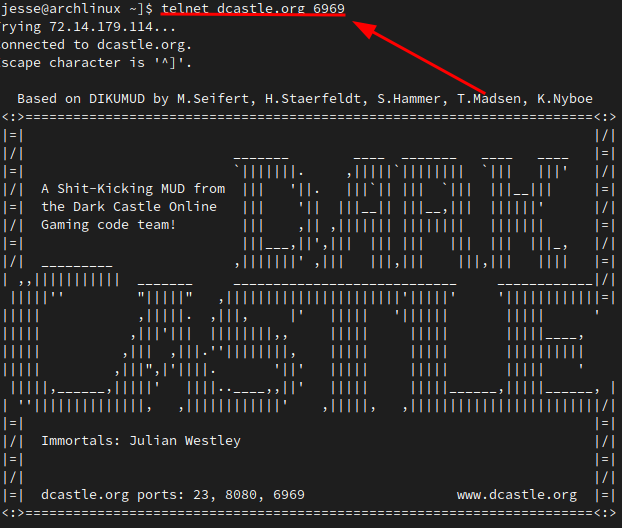
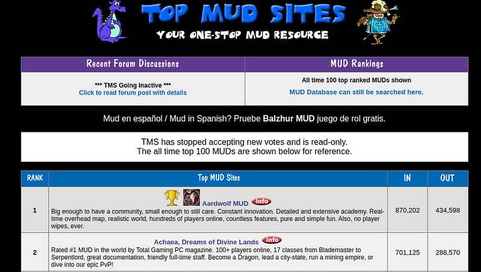
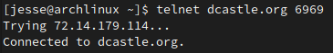
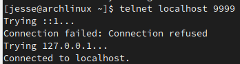
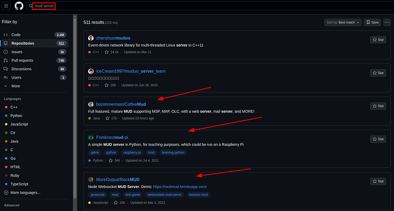
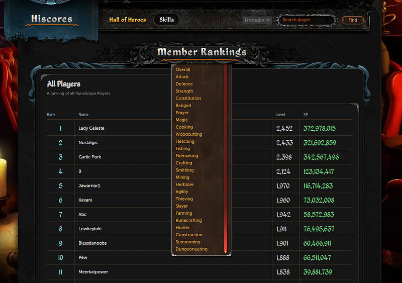
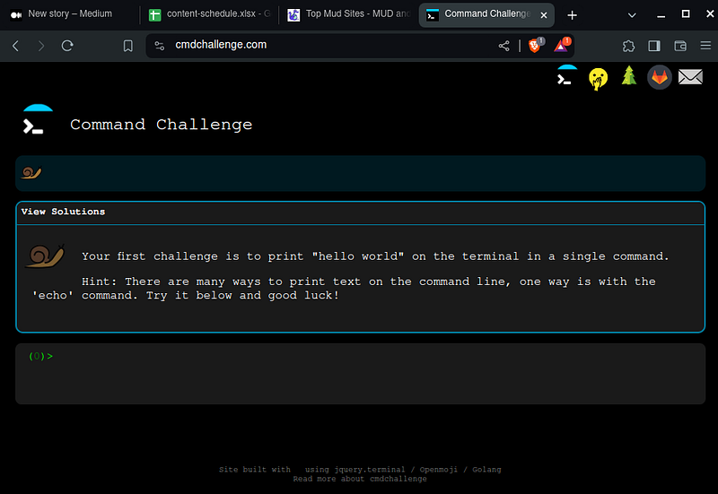

If you ever wanted a long-term project that will teach you a language, this would be it.
MUDs are amazing in their ability to teach programming. It falls under one of the best genres of learning for you, the coder. You can have fun, involve other people and create all kinds of services like a blog for the game, databases, highscores, all kinds of things..
MUD development will teach you socket programming, the programming fundamentals, server setup and if you are inclined, OOP.
If you choose a low level language you can learn memory management, how to scale projects, pointers, meta-programming and even making your own framework.
Yea, MUDs are great long-term projects (article link).
(You can open my blog articles with CTRL+Click in a separate tab and read them later)
I have written about project development being the greatest way to learn programming.
On its own, game development is ultra fun for this.
But MUDs are the easiest version of multiplayer game development.
I have worked with a team on Runescape private server development, which is essentially a MUD with a 3D window.
It was the most beneficial project I ever took for my ability to code.
I reflect on this and can see how good a text MUD can be for learning to code.
Let's talk about the details of MUD games...
What is a MUD?
Multi-User-Dungeons are command line multiplayer games whereby many players share a world fully done by text.
They typically run by a tick system and connect by telnet.
In the Dark Castle MUD, for example, you can connect with "telnet dcastle.org 6969" from any terminal in any operating system.
All operating systems can use telnet, it is possible in Bash, Powershell, Windows Terminal and all the rest.
MUDs were popular in the 1980s-1990s for their ease of connection and multiplayer features.
Before graphical games were created, this was the MMORPG scene.
MUDs are not dead and still exist to this day. There are many MUDs out there.
Check them out:
How do we start on a MUD?
You need 3 things to create a MUD. A frontend, a backend and a database.
We can pick and choose all three parts of the game. The simplest way to create a frontend is to use telnet.
Telnet can literally be your entire frontend:
One command
You don't even need to do anything as a game client. Just interact with telnet.
Why stick to text
Games like Runescape started out as MUDs and over a few years crept to completely rendered games.
A quick note on that, the Gower brothers who made Runescape were already in the game development industry for years making the graphics of video games.
They had plenty of experience that most people do not have. And, graphics programming in 1998 was considered much simpler than today. The graphics APIs in 2024 have too many features and take too many lines of code.
This is why I yearn for the fixed-function era of graphics programming. They were exciting times with simple graphics APIs.
Yea, the graphics programming frameworks were inefficient but as many graphics programmers who lived in that era say, the graphics APIs of the time were simple.
It is unfair to compare ourselves to seasoned graphics programmers, unless we are one.
Anyway, that is why I recommend sticking to just text. Creating 2D/3D graphics for a video game just takes too much upfront time.
Backend
It is super fast and easy to start on a telnet server.
You can create a telnet server in any language. It is totally up to you.
Take a look at this example server in Python:
import socket
def start_telnet_server(port):
# Create a TCP/IP socket
sock = socket.socket(socket.AF_INET, socket.SOCK_STREAM)
# Bind the socket to the server address and port
server_address = ('localhost', port)
print(f"Starting up echo server on {server_address[0]} port {server_address[1]}")
sock.bind(server_address)
# Listen for incoming connections
sock.listen(1)
while True:
print("Waiting for a connection...")
connection, client_address = sock.accept()
try:
print(f"Connection from {client_address}")
while True:
data = connection.recv(16)
print(f"Received: {data.decode()}")
if data:
print("Sending data back to the client")
connection.sendall(data)
break
finally:
connection.close()
start_telnet_server(9999)
You can run this code on your computer and connect with telnet:
Simple telnet server
You will have to design the backend telnet server any way you like.
This includes an OOP, procedural versus functional, wrapping your sockets in classes or packets. It is a lot of fun and you learn a lot about networking.
Here is an introduction to sockets (article link).
Once you get the game where you want, you can run it on a tiny $2 VPN like IONOS.
Get a domain name and link it, then bam, you got a MUD game.
Best VPS servers (article link).
Ticks
The only design tip I want to give for your code is to use ticks.
The typical way to synchronize every player in the game is to update all of them on a while loop with ticks.
import time
def updatePlayers():
pass
def game_logic():
updatePlayers()
def main_loop():
last_tick = time.time()
while True:
game_logic()
time.sleep(600)
main_loop()
The basic idea is to sleep however long you want your tick to be then update the world.
All games in game development work this way, but for you specifically a longer tick time like 600ms will allow you to amass a lot of players all at once into one server.
A database
You can use any database you want. You can go super simple with NoSQL like MongoDB, or you can go with the difficult SQL.
Me personally, I would use MongoDB. Why make it any harder than it is?
I recommend saving world data and player data either locally on the VPS file system or in a database.
For example, our multiplayer game Darkan runs on a multi-world system where every world has a local cache. All the player specific stuff goes into MongoDB.
You can create a Player class that instances all your player data, save it to a JSON and keep it in your database.
You create a player login when you start telnet.
In Mongo it would look like this:

Example player save
Then you can do some automation with MongoDB.
If you have never hard of MongoDB, I have an introductory guide to MongoDB (article link).
Use example code for your game
There are a lot of open-source MUD games out there in various languages.
A great example is the Dark Castle Mud in C++...
You connect with telnet and off you go! We connect to the MUD server.
You can search some MUD examples on GitHub:
Whichever is in your language. Then use that example as inspiration while asking an LLM questions about how to implement the server and about the example code.
You can make a highscores
Let's say you are making an RPG where you level up stats and get equipment.
As you program the telnet server, you can also create an API for the database that connects to the website.
For learning purposes you can make the API in a different language than the telnet server.
We did this for our multiplayer game, Darkan.org.
We wrote the website in Javascript, the API in Typescript and the game server in Java.
As a team we could have stuck with one language for all, but we wanted to learn those languages.
Here is the highscores for our multiplayer game:
Multiplayer hiscores
Thanks to developing this multiplayer video game I have amassed great skill in programming.
I hope the same for you.
FAQ
I have never even heard of this. Do MUDs get 0 player count?
I have to agree with this. Most people have been spoiled by fully interactive 3D games. If you make a good enough MUD people will join.
I would make a MUD for learning and just enjoyment. It is cool, fun and exciting just to program.
But I want to add 3D & 2D graphics??
The easiest form of graphics development I recommend is by WebGL.
You will have to make your own art and learn graphics programming for years to be able to do this well.
This means learning Blender, a sprite maker or other art programs. Art is always the bane of game developers.
I only recommend creating graphics if you truly love graphics programming and are willing to create a lot of art.
Though this type of game development is every programmers dream-at this point the MUD would turn to MMORPG.
How do I make the MUD game play on a website?
For a web UI I recommend a quick echo client. Basically a remake of telnet on your website.
This way you can telnet on your command line and your website. Ultra cool way to create the game.
It would look like this...
Example frontend
If you are planning on using a website I recommend a plain HTML/CSS/JS website on GitHub Pages. It is free hosting.
Everything will be in client-side Javascript.
What programming language should I choose?
There are two approaches to picking a programming language. Either, you can pick the one you know best. Or, you can pick one that you want to learn. It more depends if you care more about the product or the journey.
Do you want to make a fantastic MUD? Or do you want to learn as much as possible about a language? You will have to weigh these two values.
How do I setup the server and domain?
I recommend the cheapest VPS. Try to aim for $2-$3/month, place your server on there. You can buy a domain on Namecheap, Hostinger or many other domain providers.
Anywho, I hope you learned something...
CTA: Check out my book on learning code
Happy coding!
Resources
Best way to learn programming: What Is the #1 Way To Improve Skill?
Introduction to socket programming: A Quick Guide on How Epic Coders Connect the World Through Sockets
VPS Hosting: How Do Virtual Private Servers Work and Why Are They Awesome?
What is MongoDB: How Databases Work and Why They Are So Cool
MUD example: https://www.dcastle.org/